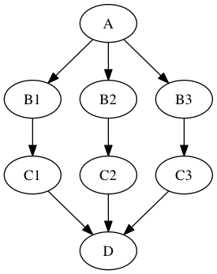
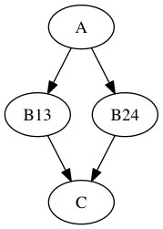

JoinNode, synchronize and itersource¶
The previous MapNode, iterfield, and iterables explained chapter described how to fork and join nodes using MapNode and iterables. In this chapter, we introduce features which build on these concepts to add workflow flexibility.
JoinNode, joinsource and joinfield¶
A nipype.pipeline.engine.JoinNode generalizes MapNode to
operate in conjunction with an upstream iterable node to reassemble
downstream results, e.g.:

The code to achieve this is as follows:
import nipype.pipeline.engine as pe
a = pe.Node(interface=A(), name="a")
b = pe.Node(interface=B(), name="b")
b.iterables = ("in_file", images)
c = pe.Node(interface=C(), name="c")
d = pe.JoinNode(interface=D(), joinsource="b",
joinfield="in_files", name="d")
my_workflow = pe.Workflow(name="my_workflow")
my_workflow.connect([(a,b,[('subject','subject')]),
(b,c,[('out_file','in_file')])
(c,d,[('out_file','in_files')])
])
This example assumes that interface “A” has one output subject, interface “B” has two inputs subject and in_file and one output out_file, interface “C” has one input in_file and one output out_file, and interface D has one list input in_files. The images variable is a list of three input image file names.
As with iterables and the MapNode iterfield, the joinfield can be a list of fields. Thus, the declaration in the previous example is equivalent to the following:
d = pe.JoinNode(interface=D(), joinsource="b",
joinfield=["in_files"], name="d")
The joinfield defaults to all of the JoinNode input fields, so the declaration is also equivalent to the following:
d = pe.JoinNode(interface=D(), joinsource="b", name="d")
In this example, the node “c” out_file outputs are collected into the JoinNode “d” in_files input list. The in_files order is the same as the upstream “b” node iterables order.
The JoinNode input can be filtered for unique values by specifying the unique flag, e.g.:
d = pe.JoinNode(interface=D(), joinsource="b", unique=True, name="d")
synchronize¶
The nipype.pipeline.engine.Node iterables parameter can be
be a single field or a list of fields. If it is a list, then execution
is performed over all permutations of the list items. For example:
b.iterables = [("m", [1, 2]), ("n", [3, 4])]
results in the execution graph:

where “B13” has inputs m = 1, n = 3, “B14” has inputs m = 1, n = 4, etc.
The synchronize parameter synchronizes the iterables lists, e.g.:
b.iterables = [("m", [1, 2]), ("n", [3, 4])]
b.synchronize = True
results in the execution graph:

where the iterable inputs are selected in lock-step by index, i.e.:
(m, n) = (1, 3) and (2, 4)
for “B13” and “B24”, resp.
itersource¶
The itersource feature allows you to expand a downstream iterable based on a mapping of an upstream iterable. For example:
a = pe.Node(interface=A(), name="a")
b = pe.Node(interface=B(), name="b")
b.iterables = ("m", [1, 2])
c = pe.Node(interface=C(), name="c")
d = pe.Node(interface=D(), name="d")
d.itersource = ("b", "m")
d.iterables = [("n", {1:[3,4], 2:[5,6]})]
my_workflow = pe.Workflow(name="my_workflow")
my_workflow.connect([(a,b,[('out_file','in_file')]),
(b,c,[('out_file','in_file')])
(c,d,[('out_file','in_file')])
])
results in the execution graph:

In this example, all interfaces have input in_file and output out_file. In addition, interface “B” has input m and interface “D” has input n. A Python dictionary associates the “b” node input value with the downstream “d” node n iterable values.
This example can be extended with a summary JoinNode:
e = pe.JoinNode(interface=E(), joinsource="d",
joinfield="in_files", name="e")
my_workflow.connect(d, 'out_file',
e, 'in_files')
resulting in the graph:

The combination of iterables, MapNode, JoinNode, synchronize and itersource enables the creation of arbitrarily complex workflow graphs. The astute workflow builder will recognize that this flexibility is both a blessing and a curse. These advanced features are handy additions to the Nipype toolkit when used judiciously.